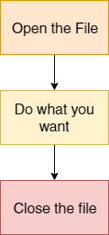
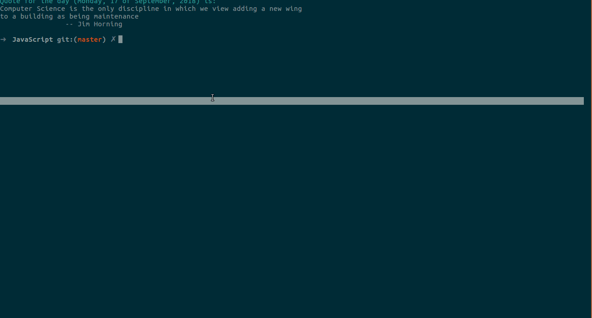

IOSTREAM
#Java_File_Handling
Find this presentation at: http://madhavbahl.tech/iostream/
Use Arrow Keys To Control this Presentation
About Me | The Lean Programmer
A cadet by nature and a developer by passion, a wannapreneur, tech enthusiast, open source contributor (https://github.com/MadhavBahlMD), tech blogger (https://medium.com/@madhavbahl10), writer, motivator and mentor for those who want to learn programming, development and recent technologies. Being an active part of many communities, also through his own tech community, CodeToExpress, Madhav has been contributing to make the youth of this world well versed with programming.
Yes, I am socially active :D
Follow Me On GitHub: @MadhavBahlMD
Find Me On Insta: @theleanprogrammer
Read My Bolgs At Medium: @madhavbahl10
Connect With Me On LinkedIn: @madhavbahl
No more wasting time in introduction
Interested in knowing more about me?
Visit http://madhavbahl.tech
What are we going to discuss today? 💭
Revision from previous class
The File Class
Constructors
| Constructor | Description |
|---|---|
| File (String path) | Creates a new file. It gets file path in string |
| File (String Parent, String child) | Gets path of parent and name of child as arguments and creates new file |
| File (File Parent, String Child) | Gets object of a file whose path will be used as the location of child file, and the name of file as argument |
Methods
- String getName()
- String getParent()
- String getPath()
- String getAbsolutePath()
- boolean canRead()
- boolean canWrite()
- boolean exists()
- boolean isDirectory()
- boolean isFile()
- long length()
- boolean renameTo()
- And so on...
Why File Handling? 📚📁
There are tons of reasaons why we should learn file handling
- Store Data
- Use Files when there are no concurrent users
- Use Files when security is not a concern
- Access System Files
- Create Scripts to automate various tasks
- Automate the test cases
- Basic CRUD operations when amount of data is small
- Going for Database for small scale projects is not a good idea
- Save state of your programs/Applications
- By giving the ability of saving the state, one can apply a lot of creativity to make innovative projects
Why did I focus on saving state?
Almost every application, game, etc. needs to remember the state where the user left
Some places where I used file handling
- Data transfer from one platform to another (due to some constraints, making an API wasn't possible)
- Website Blocker - Project Control Yourself
- Plagiarism Checker
- File Converter
- Automated testing in an open source project
- Event Certificate and Mail
Have a project idea? Let's do it together, mail me at theleanprogrammer@gmail.com
Before proceeding with the input output (IOSTREAM), It's important to know about Exception Handling 🏃♂
Exception
An event that occurs during the execution of a program that disrupts the normal flow of program's instructions
The 2 step master plan for handling exceptions
The Brahmastra 🏹
- What went wrong?
- What can we do about it?
Two Types of Exception Handling Techniques
LBYL vs EAFP
Try to guess what they mean?
LBYL
Look Before You Leap
- Before proceeding with the processing, we check whether our conditions our fulfilled
- Handle exceptions before they happen
- Example, we check that the objecct is not null, and then use it
- Example, we check the number is not zero before using it as a divisor
EAFP
Easy to Ask for Forgiveness than Permission
- Go ahead and perform the task, and then respond to an exception
Your Homework 🙆♂
Study more about LBYL and EAFP, and find out which one is better in what circumstances
What do you mean by Input and Output? ⌨🖥
INPUT
A process of reading data from a source
That source can be anything, maybe a file, or even your keyboard
OUTPUT
A process of writing data to some destination
That destination might be the console, screen or a file
Java IO and File Handling
- Java uses the concept of streams to make IO operations fast
- The package - java.io - contains all the classes required for IO operations
What do you mean by the term "STREAM" 🌊
Stream
A stream (in english), means a sequential transfer of anything that can flow. And it's the same in programming, a stream is nothing but the sequence of data (In java, it is composed of bytes)
3 types of streams provided to us in Java.io
- System.out: Standard Output Stream
- System.in: Standard Input Stream
- System.err: Standard Error Stream
Example
Let's visualize the things

source: JavaTPoint
Useful methods of OutputStream
| Method | Description |
|---|---|
| 1. public void write(int) throws IOException | is used to write a byte to the current output stream. |
| 2. public void write(byte[]) throws IOException | is used to write an array of byte to the current output stream. |
| 3. public void flush() throws IOException | flushes the current output stream. |
| 4. public void close() throws IOException | is used to close the current output stream. |
Useful methods of InputStream
| Method | Description |
|---|---|
| 1. int read() throws IOException | reads the next byte of data from the input stream. It returns -1 at the end of the file. |
| 2 int available() throws IOException | returns an estimate of the number of bytes that can be read from the current input stream. |
| 3. public void close() throws IOException | is used to close the current input stream. |
File Handling: Simplified
What is the FileOutputStream class in Java?
A simple output stream used to write primitive data types to the file
Please note that if you need to write Strings and character oriented data, it is preferred to use FileWriter class
FileOutputStream class methods
| Method | Description |
|---|---|
| protected void finalize() | It is used to clean up the connection with the file output stream. |
| void write(byte[] ary) | It is used to write ary.length bytes from the byte array to the file output stream. |
| void write(byte[] ary, int off, int len) | It is used to write len bytes from the byte array starting at offset off to the file output stream. |
| void write(int b) | It is used to write the specified byte to the file output stream. |
| void close() | It is used to closes the file output stream. |
Let's See an Example 💻
Can we write a string to file using FileOutputStream?
Yes! Byte Array
Hint: str.getBytes();
What is the FileInputStream class in Java?
Java FileInputStream class obtains input bytes from a file. It is used for reading byte-oriented data (streams of raw bytes)
Please note that if you need to read Strings and character oriented data, it is preferred to use FileREader class
FileInputStream class methods
| Method | Description |
|---|---|
| int available() | It is used to return the estimated number of bytes that can be read from the input stream. |
| int read() | It is used to read the byte of data from the input stream. |
| int read(byte[] b) | It is used to read up to b.length bytes of data from the input stream. |
| int read(byte[] b, int off, int len) | It is used to read up to len bytes of data from the input stream. |
| long skip(long x) | It is used to skip over and discards x bytes of data from the input stream. |
| protected void finalize() | It is used to ensure that the close method is call when there is no more reference to the file input stream. |
| void close() | It is used to closes the stream |
Let's See an Example 💻
How would you read all character?
Hint: Use a while loop
What is the FileWriter class in Java?
Java FileWriter class is used to write character-oriented data to a file. It is character-oriented class which is used for file handling in java.
Unlike FileOutputStream class, we don't need to convert string to byte array while writing
Constructors
| Constructor | Description |
|---|---|
| FileWriter(String file) | Creates a new file. It gets file name in string |
| FileWriter(File file) | Creates a new file. It gets file name in File object |
FileWriter class methods
| Method | Description |
|---|---|
| void write(String text) | It is used to write the string into FileWriter. |
| void write(char c) | It is used to write the char into FileWriter. |
| void write(char[] c) | It is used to write char array into FileWriter. |
| void flush() | It is used to flushes the data of FileWriter. |
| void close() | It is used to close the FileWriter. |
Let's See an Example 💻
What is the FileReader class in Java?
Yes, you gussed it right, Java FileReader class is used to read data from the file.
Constructors
| Constructor | Description |
|---|---|
| FileReader(String file) | It gets filename in string. It opens the given file in read mode. If file doesn't exist, it throws FileNotFoundException. |
| FileReader(File file) | It gets filename in file instance. It opens the given file in read mode. If file doesn't exist, it throws FileNotFoundException. |
FileReader class methods
| Method | Description |
|---|---|
| int read() | It is used to return a character in ASCII form. It returns -1 at the end of file. |
| void close() | It is used to close the FileReader class. |
Let's See an Example 💻
NO! File handling isn't over yet
What we discussed was a very small part in File Handling
Tre Reading these topics after you go home/room/hostel 😬
- Buffered Input/Output Stream
- Sequence Input Stream
- ByteArray Input/Output Stream
- Data Input/Output Stream
- FilterOutput Stream and FilterInput Stream
- BufferedReader and BufferedWriter
- CharArrayReader and CharArrayWriter
- PrintStream
- PrintWriter
- StringReader and StringWriter
- PipedReader and PipedWriter
- Sequential Access and Random Access
Here's a small DIY Project for you 😃
Create a simple time dependent website blocker in java
A created a similar project using JavaScript, although the languages are different, the proceedure is similar
https://medium.freecodecamp.org/how-to-block-unproductive-websites-and-boost-your-productivity-using-javascript-20534011ccccCreate a script to block the given set of websites on a particular time period each day
Good Luck ✨
Be creative and apply file handling concepts more!
To View This Presentation, Visit: http://madhavbahl.tech/iostream
Want to improve your programming skills? 🤩
Try out the daily codes challenge ✨
Have doubts? Feel free to reach out 😁
Thank You!
References